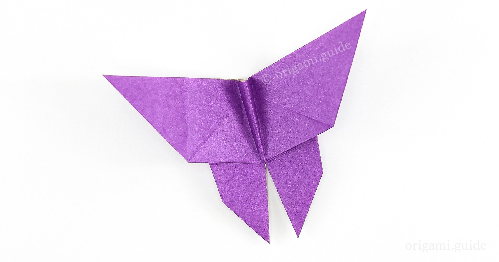

Camels

Fun Facts about Camels
1. There are two types of camels: One humped or “dromedary” camels and two humped Bactrian camels.
2. Camels have three sets of eyelids and two rows of eyelashes to keep sand out of their eyes.
3. Camels have thick lips which let them forage for thorny plants other animals can't eat.
Butterfly

Fun Facts about Butterflys
1. Butterfly wings are transparent.
2. Butterflies use their feet to taste.
3. Butterflies sometimes meet up and gather around puddles.
Piggies

Fun Facts about Pigs
1. In their natural state, pigs are very clean animals.
2. When they are trained piglets can learn their names at just two to three weeks old.
3. Pigs use grunts to communicate with each other
Monkeys

Fun Facts about Monkeys
1. Only New World Monkeys Have Prehensile Tails
2. Mandrills Are the World's Largest Monkeys
3. Pygmy Marmosets Are the World's Smallest Monkeys